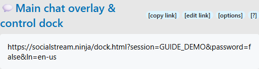
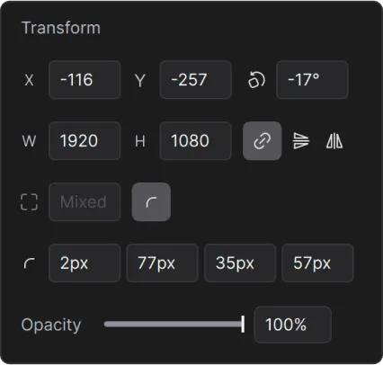

1. Connect your chat in SSN
SSN collects the messages; Meld displays the overlay. Choose one way to run SSN:
- Desktop app: install Social Stream Ninjaで、次を開きます： ソースと設定, and turn the service on. Add your platform and channel or live-event link, then choose ソースを有効化（Activate source）. Sign in when the platform requires it.
- Browser extension: install the SSN extension in Chrome or Edge and enable it. In that same browser, open a supported live-chat page and keep the tab open.
開く項目： メインチャットオーバーレイと操作ドック（Main chat overlay & control dock） from SSN settings. Confirm a new message from your chat appears there. Keep SSN and its capture sources running while you stream.


New to SSN? Follow the installation walkthrough または find your platform's capture instructions.
2. Prepare a transparent overlay link
For a scrolling chat overlay, use メインチャットオーバーレイと操作ドック（Main chat overlay & control dock）. In its SSN settings:
- 展開する項目： ドック下部のメニューバー を開き、次を有効にします： メニューバーを隠す（Hide menu bar）。次の設定はそのままにします： Force Show menu bar off; it overrides the hide setting.
- 展開する項目： オーバーレイ を開き、次を有効にします： 背景を強制的に透明化（Force transparent background）.
- 選ぶ項目： リンクをコピー again after making these changes.

The copied Dock URL should contain transparent および hidemenu. Preserve its session, password, styles, and connection options when moving it into Meld. Treat your session link as private.
For your own controls, open a separate Dock window outside the scene. Remove &hidemenu from that window's URL to restore its menu; keep it in the link used by the audience overlay.
3. Add the link to Meld
- In your Meld scene, click + 格納先： Layers を開き、次を選択します： ブラウザ.
- Paste the copied overlay link into URL 。所属するグループ： Inspector.
- Name the layer SSN Chat and place it above the game, camera, or background it should cover.

After replacing a link, click the reload icon beside the URL. Meld Browser-layer instructions.
4. Set the chat area and text size
- Select the Browser layer. Turn Lock Size off so the page can adapt to resizing.
- 次の場所で： Inspector → Transform, enter width (W) and height (H). For example, try 400 × 700 for a chat column. Unlock the aspect-ratio chain if you need to change the proportions.
- Position the chat on your scene. Use Fit to avoid layer cropping; Fill can crop.


有効化 Lock Size afterward if you want subsequent resizing to scale the existing page layout. For a full-scene design, start with your canvas dimensions. Meld sizing help.
For the standard SSN Dock, enable Overlay → Chat Output Scale and adjust its slider for readability, then copy the updated link into Meld. Check long messages and names at the size your audience will see. Custom overlays may have their own text-size controls.
5. Check the scene before streaming
- 使う項目： 疑似テストメッセージを送信 in SSN settings to check placement and appearance.
- Send a few new messages from each connected platform, including a long message to check wrapping.
- Compare them in the original chat, the SSN Dock, and Meld. Each message allowed by your filters should appear once in each intended view. Allow messages to arrive before comparing.
- Make a short recording in Meld. Check readable text, transparent space, unclipped edges, and any audio you enabled.
A fake message checks the overlay connection and layout. Real chat messages also check that your source is capturing. Account for any filters you deliberately enabled.
Optional features
Use another SSN overlay or a custom chat
Choose a layout from the overlay gallery or use your custom overlay's URL. Connect it to the same SSN session, including any required password and connection options, and add it as another Meld Browser layer.
For a downloaded HTML overlay, follow its setup instructions to set your session, keep accompanying assets with it, then drag the HTML file onto Meld's canvas to create a Browser layer. Dock-specific switches such as hidemenu do not automatically apply to custom pages.
Add text-to-speech or alert sounds
Configure TTS in SSN or choose an overlay with sound, then copy its updated link into Meld.
In Meld's Browser Inspector, enable Add an audio track for the source。使う項目： CUE to monitor it. Meld audio help.
Check the mixer and recording. Avoid playing the same TTS in another captured Dock window or capturing its monitored sound a second time.
プラットフォーム間でチャットを転送する
Chat relay reposts messages into other platform chats. You do not need it just to combine chats in an overlay, and enabling a relay flow does not require replacing your overlay URL. Follow the chat relay guide to choose senders and destinations.
If you change SSN's session or overlay connection settings, copy the newly generated overlay link into Meld.
トラブル対処
The overlay is blank
Open the Dock link from your current SSN settings. If new chat is missing there too, check that SSN is enabled, the correct source is active, and its chat page is open. Use your platform's setup instructions.
If the Dock works, compare its session and connection settings with the Meld URL. Reload the Browser layer. Check that the layer is visible, on the canvas, and above opaque layers. Featured-message overlays wait for you to feature a message.
There is a grey background or a bottom menu
For the standard Dock, repeat step 2 and replace the old URL in Meld. Disable conflicting page-background options. See the illustrated transparency guide. For a custom overlay, change its own background settings.
Messages are cut off, or resizing only stretches them
Right-click the Meld layer and choose Reset Crop. Then repeat step 4 with Lock Size off and reload. Changing the scene's overall output resolution is separate from setting this Browser layer's dimensions.
If the full page is visible but text is clipped inside a message bubble, changing Meld's crop or Fit setting cannot repair that page layout.
If a custom overlay still clips text, open the same URL in a browser at a similar width. If it clips there too, check the overlay's fixed or minimum widths, wrapping, margins, and overflow settings. Ask its creator to make the layout fit the intended chat area.
If the problem occurs only in Meld, share your Meld version, operating system, layer dimensions, sizing/crop settings, and a screenshot with Meld support. Remove private session details from screenshots.
Messages appear twice
Compare the original platform chat, SSN Dock, and Meld to find where the extra copy first appears. Check for duplicate SSN capture sources, relay echoes, or two visible copies of the same overlay layer. Keep one intended capture path per chat.